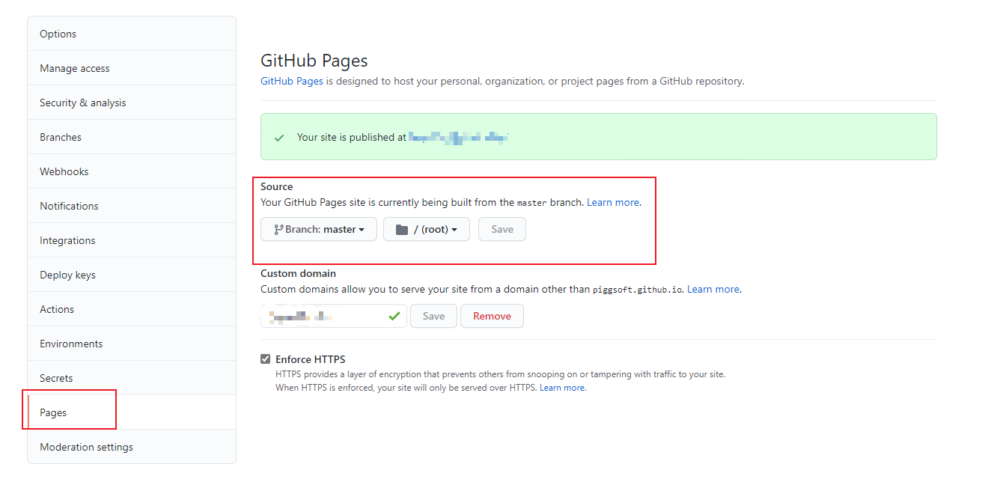
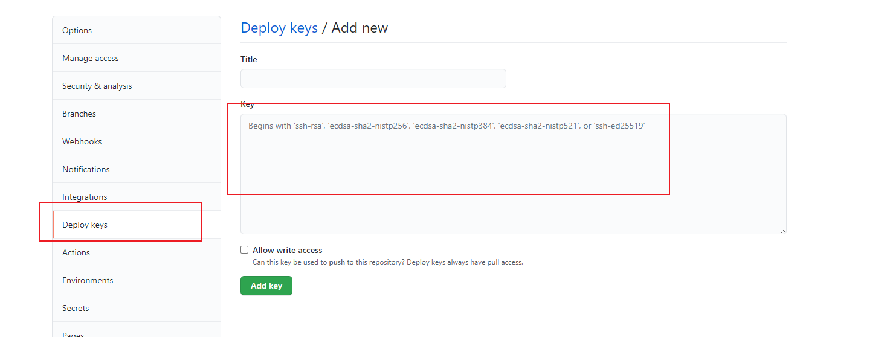
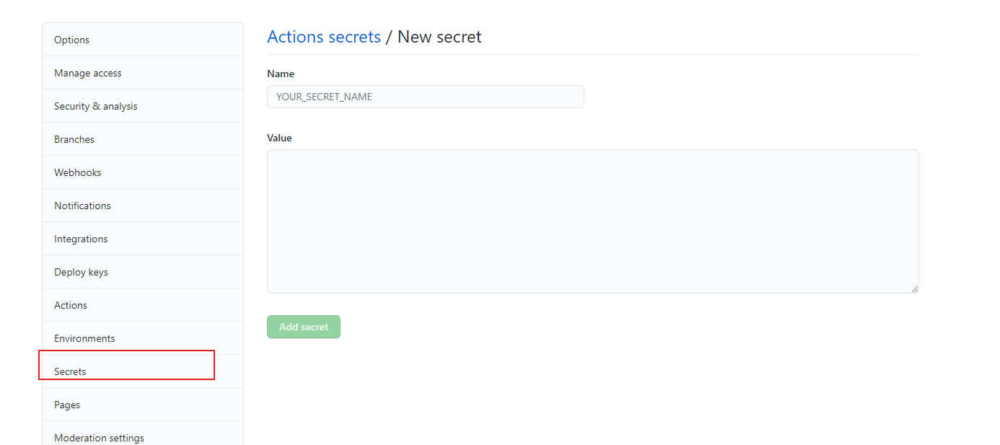

依托于github来创建属于个人的博客，并开启评论，以及使用自定义域名访问。
你将达成
- 依托Github Pages搭建博客
- 使用自定义域名访问Github Pages
- 引入Hexo Next模板
- 加入备案信息
- 开启评论
- 个性化配置
依托github搭建博客
准备
新建一个名为
xxx.github.io的仓库，其中xxx为你登录后https://github.com/xxx显示的用户名对仓库进行配置，配置如下
安装hexo
1
npm install hexo-cli -g
创建博客工程
1
2
3hexo init xxx.github.io
cd init xxx.github.io
npm install下载主题插件
1
2cd init xxx.github.io
git clone https://github.com/ themes/next创建用户数据文件
1
2
3cd init xxx.github.io/source
mkdir _data
cd _data将
themes/next/_config.yml复制到source/_data目标，并改名为next.yml
将next.yml中的override: false改为override: true修改配置hexo的住配置文件
xxx.github.io/_config.yml, 修改项如下1
2
3
4
5
6
7
8
9
10
11title: xxxx #博客标题
subtitle: xxxx ## 副标题
description: xxxx ## 博客说明
keywords: xxxx ##SEO用
author: xxxx ##作者名称，显示用
language: zh-CN
timezone: Asia/Shanghai
url: https://xxx.github.io
theme: next推送到
github上1
2
3
4
5git init
git add .
git commit -m "first commit"
git remote add origin https://github.com/xxx/xxx.github.io
git push -u origin master本地新建
source分支，切换到source分支上，并将该分支推到github1
2git checkout -b source
git push origin source:source在本地创建部署公私钥
ssh-keygen -t rsa -b 4096 -C "your_email@example.com"将公私钥填入到
github中，并确认私钥的名称，假设私钥名称为GENERATE

在
github上创建流水线文件.github/workflows/pages.yml,内容为1
2
3
4
5
6
7
8
9
10
11
12
13
14
15
16
17
18
19
20
21
22
23
24
25
26
27
28
29
30
31
32
33
34
35
36
37
38
39
40
41
42
43
44
45
46
47
48
49
50
51
52
53
54
55
56
57
58
59
60
61
62
63name: Pages
on:
push:
branches:
- source # default branch
jobs:
build:
runs-on: ubuntu-latest
name: A job to deploy blog.
steps:
- name: Checkout
uses: actions/checkout@v2
with:
submodules: true # Checkout private submodules(themes or something else).
- name: Checkout tools repo
uses: actions/checkout@v2
with:
repository: theme-next/hexo-theme-next
path: themes/next
- name: Setup Node.js environment
uses: actions/setup-node@v2.1.5
with:
node-version: 12.x
# Caching dependencies to speed up workflows. (GitHub will remove any cache entries that have not been accessed in over 7 days.)
- name: Cache node modules
uses: actions/cache@v1
id: cache
with:
path: node_modules
key: ${{ runner.os }}-node-${{ hashFiles('**/package-lock.json') }}
restore-keys: |
${{ runner.os }}-node-
- name: Install Dependencies
if: steps.cache.outputs.cache-hit != 'true'
run: npm ci
- name: Build
run: npm run build
- name: Deploy
uses: peaceiris/actions-gh-pages@v3.7.3
with:
deploy_key: ${{ secrets.GENERATE }}
#github_token: ${{ secrets.GENERATE }}
publish_dir: ./public
publish_branch: master
# Deploy hexo blog website.
#- name: Deploy
# id: deploy
# uses: sma11black/hexo-action@v1.0.3
#with:
# deploy_key: ${{ secrets.GENERATE }}
#user_name: piggsoft # (or delete this input setting to use bot account)
#user_email: piggsoft@163.com # (or delete this input setting to use bot account)
#commit_msg: ${{ github.event.head_commit.message }} # (or delete this input setting to use hexo default settings)
#publish_dir: ./public
#publish_branch: master # deploying branch
# Use the output from the `deploy` step(use for test action)
- name: Get the output
run: |
echo "${{ steps.deploy.outputs.notify }}"修改
source/helloworld.md中任意内容，观察Github Actions,待完成后，浏览器中输入xxx.github.io，观察博客